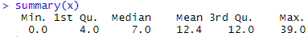

ADsP 문제 풀이 6일차
R 복습
20회 기출문제
1. 다음 중 아래 코드의 결과로 적절한 것은?
s = c("Monday","Tuesday","Wednesday")
substr(s,1,2)
"Monday" "Tuesday
"Mo" "Tu" "We"
"Mo" "Tu"
"Monday"
21회 기출문제
2. 이상값 탐색을 위해 상자그림을 사용하려 한다. 아래와 같은 데이터 요약 결과가 있을 때, 이상값을 판단하는 하한선, 상한선으로 옳은 것은?

(-12,36)
(4,12)
(-2,3)
(-8,24)
3. 다음 중 아래 코드의 결과의 타입은 무엇인가?
s = c("Monday","Tuesday","Wednesday")
strsplit(s,"d")
리스트
벡터
데이터프레임
어레이
제출하기